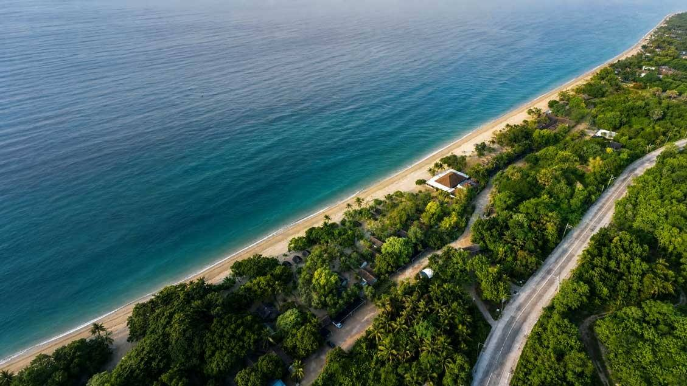

Virgin Beach Resort is located at Km. 23.5 of the Laiya-Lobo Highway, Barangay Laiya, San Juan, Batangas. It sits on a cove facing southeast and Sigayan Bay, while the majestic mountains of Daguldol and Lobo lie behind it. Sigayan Bay is known to be one of the cleanest bays in the country and is part of the Verde Passage, identified as the earth's center of marine biodiversity.
Virgin Beach Resort is accessible by land from Metro Manila. See our Contact page for the map and directions.
The travel time by car is normally 3 hours from Metro Manila, depending on traffic and road conditions.
We require full payment to secure your booking. We accept cash (Philippine Peso or USD) or credit card (Visa or Mastercard) or bank deposit (Unionbank). Check payments are not allowed.
For overnight guests: Check-in — 2:00 PM, Check-out — 11:30 AM. For Day Trip guests: Check-in — 8:00 AM, Check-out — 5:00 PM.
Day Tour guests may avail of dinner at our overnight section. Should you wish to stay for dinner, kindly inform our front office beforehand. Seating is subject to table availability.
We accommodate early check-in or late check-out options subject to room availability. Early check-in can commence from 9:00 AM onwards, with an hourly charge of ₱750. Late check-out is permissible until 3:00 PM, also with an hourly charge of ₱750. Staying beyond 3:00 PM will incur charges equivalent to another night's stay. If you wish to avail of these options, please feel free to inquire with our Front Office.
For promotional offers, reservations are non-rebookable and non-refundable.
| 15+ days prior | Free of charge |
| 14 days or less | 50% of booking value forfeited |
| 7 days or less / No Show | 100% forfeited |
Please note that a one-time rescheduling can be arranged and the set date should occur within one (1) month of the original date, after which any and all deposits will be forfeited. Rebooking is subject to availability, seasonal rate difference and increase in published rates when applicable.
| 14+ days prior | 20% forfeited |
| Inclement weather (Corporate) | Free if Signal No. 1 |
| Inclement weather (Individual) | Free if Signal No. 2 |
For cash payments, a refund check will be issued in 7 working days. For credit card payments, provided the credit card company has not yet issued a refund, a refund check net of credit card charges and fees will be issued in 14 working days.
Senior Citizens and PWD are entitled to a 20% discount on their accommodation and meals provided they present their OSCA Identification Card. Discounts for accommodations and meals apply only to the individual with a valid OSCA ID. This discount cannot be combined with any other discounts or promotions and is not available on our booking engine. Please secure your reservation through our reservations office if you wish to avail of this discount. We also honor SC and PWD discounts for walk-in guests who pay upon check-in.
We grant VAT exemption to non-residents who are affiliated with foreign embassies in the Philippines and their dependents, provided they present a photocopy of their VAT Exemption certificate and Department of Foreign Affairs (DFA) issued Identification Card upon payment. VAT Exemption is not available on our booking engine. Please secure your reservation through our reservations office if you wish to avail of the exemption. We also honor VAT exemption for walk-in guests who pay upon check-in.
The Pavilion is open from 7:00 AM to 10:00 PM. Dining hours are as follows:
| Breakfast | 7:00 AM – 9:00 AM |
| Lunch | 12:00 PM – 2:00 PM |
| Dinner | 7:00 PM – 9:00 PM |
The daily meal package includes three meals that are mandatory for the duration of our guests' overnight stay, comprised of lunch upon arrival, dinner, and breakfast the following morning, not necessarily in that order. Our menu is made up of international and local cuisine served managed buffet style. À la carte meals are available in addition to the mandatory full board meals availed during the stay. Meals for guests' staff are available for ₱750/day.
| Adult | ₱2,450.00 |
| Child (6–12) | ₱1,225.00 |
| Ages 0–5 | Free |
*All prices are inclusive of 12% VAT and Service Charge.
When there is a decrease in the number of confirmed guests, payments made towards the overnight meal package may be consumed as dining credits in the Pavilion, otherwise remaining credits are forfeited.
We can accommodate your dietary restrictions to the best of our ability. To ensure that our kitchen can plan and prepare your meals in time, we do require that guests inform our reservations office ahead of their stay.
No prepared food and beverages from sources other than the Resort's dining services are permitted on the resort premises. Wines and spirits are allowed but subject to corkage fees.
At the moment, these rooms are not available. However, we do our best to accommodate PWD guests by offering them our most accessible rooms. Kindly inform our reservations office or front office if you are traveling with a PWD guest.
Quarters are available for ₱1,750.00 per person per night, inclusive of mattress and beddings with plated breakfast, lunch, and dinner.
Guests may only add up to 1 additional guest in our Deluxe Double Queen, Sunrise, Louver-Window, and Bamboo Casitas, regardless of age. An extra person charge with a mattress will apply, along with full board meals. See our Terms & Conditions for more information.
Complimentary Wi-Fi is available for our overnight and day tour guests at The Pavilion.
We value the safety and convenience of all our guests. During your stay, you and your pet are very welcome to experience enriching moments at the resort. Guests will be requested to comply and sign the Pet Policy Agreement and a ₱750 per pet/night sanitation fee.
Virgin Beach Resort provides ample parking space for its guests. Complimentary parking is available for overnight and Day Trip guests.
There is a nearby reef formation just along the coastline at the northernmost part of the resort.
Our reservations team is happy to help with anything not covered here.
Contact Us